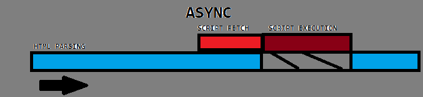
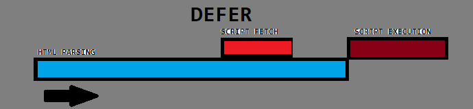

Javascript
Javascript is a dynamic and purely object-oriented programming language primarily used for the development of a website.
Its purpose is to make the website interactive and at the same time provide a simple and yet responsive webpage making it
more user-friendly. Today, all of the web browsers support Javascript and all of the Javascript engines are based on the
ECMA script specification.
< Script > and < Noscript > element
- < Script > - It is an element in Javascript which contains the scripting statements or external script. It is also
used to define the client-side script. It has two attributes namely async and defer that gives the programmer
more control for the flow of the external files.
- Async - it is an attribute used so that the program can execute aynschronously.
- It will not block the execution of the page if the script is waiting for something.

- Defer - it is an attribute that gives the browser a signal to execute the script once the parsing of the HTML is complete

- < Noscript > - It is an alternative script that will be executed once the browser doesn't support Javascript.
- It makes sure that it will inform the user that the browser doesn't support javascript.
BOM and DOM
Browser Object Model
- These are objects you can use to manipulate a browser
- It has NO STANDARD since all the browsers share the same object and can me manipulated with their wants
- SOME OF THE BOM OBJECTS
- navigator
- screen
- history
- location
- document
Document Object Model
- It is a part of a Browser Object Model that helps the user manipulate the page and it is a accessed via document object of the global oject window.
- It has levels from 1 - 3
- It is recommended by the W3C
JavaScript Syntax
Variables
- Decimal Integer
- Floating-point
- Scientific Notations
- Binary
- Octal
- Hexadecimal
Object Types
- String
- Number
- Boolean
- Date
Boolean Expression
- "==" Loose Comparison
- "===" Strict Comparison
Array
- Dynamic ASssignment and Size
Array Declaration
- var fruits = new Array(3);
- fruits[0] = 'Banana';
Array Methods
- pop - Returns value at the end
- push - Adds a value/object at the end
- unshift - add front
- shitft - remove front
Objects(JSON approach)
- No class declaration needed.
- The moment you create the variable, the object is already created.
- Can use JSON.stringify or JSON.parse to cnvert an object.
Events
- All clicks are events.
- They are all listed in the API.
- You can associate multiple handler in an event.
- You can also have your own event.
Event Handling
- Ordering of Event Propagation
- Capturing phase
- At target
- Bubbling Phase